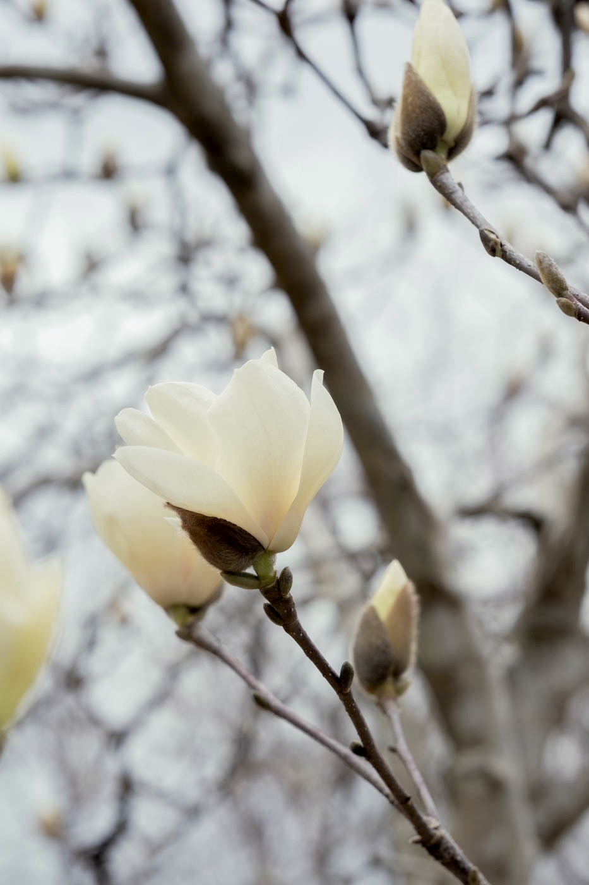

写真家、そして言葉を書く人。
大学で文学を学んだのち、ある旅先でカメラと出会う。光と影が地面に溶け込む夕暮れどき、雨粒が窓ガラスを伝う静かな朝——そういった「ことば以前の瞬間」を撮るために、シャッターを押し続けるようになった。
写真と文章は、私にとって同じひとつの行為だ。世界を見て、感じて、残す。
光が地面に倒れる瞬間がある。
言葉が胸に落ちてくる瞬間がある。
その二つは、私の中では同じことだ。
世界と私の間に生まれる、小さくて確かな出来事を、
ただ丁寧に、拾い続けたい。